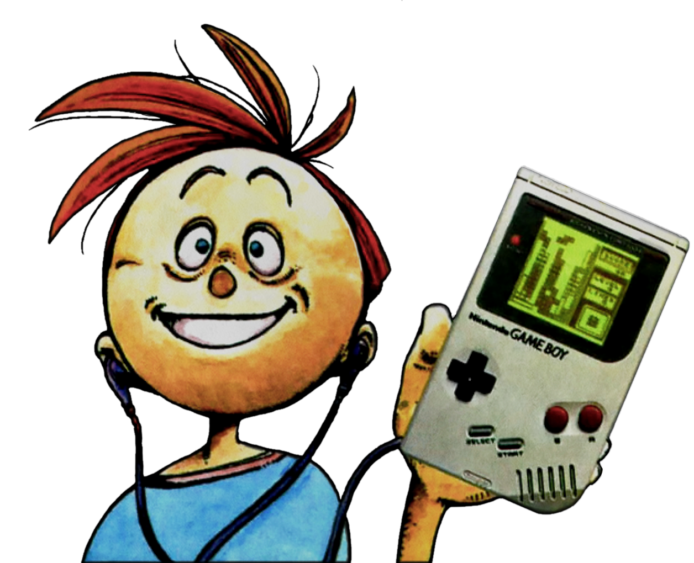
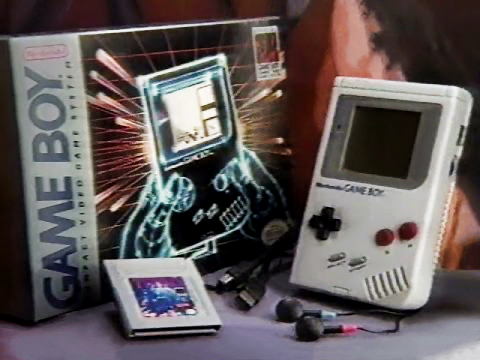
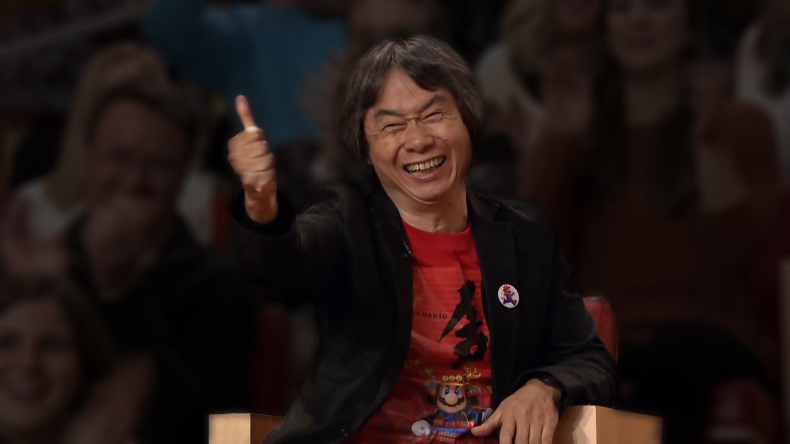
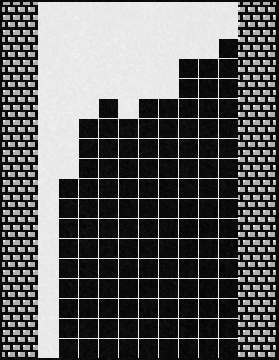

Ahhh… Tetris.
The relentless building block video puzzle
game that launched with Nintendo’s Game Boy in 1989.
The title “originally comes from the word tetra” or tetromino — a shape made of four blocks, kind of like how a domino is a shape made of two blocks — combined with tennis, a favorite activity of the game’s original creator Alexey Pajitnov.

Nester & Game Boy Illustration,
Nintendo Power,
I still admire traditional, original Game Boy version. I like it. It’s very close to my own.
— Alexey Pajitnov, Tetris Creator
While the Tetris franchise has an interesting and complicated history dating back as early as 1985, it was the Nintendo Game Boy version that I have the fondest memories of.
Whether it was taking turns to get the high score with my mom, dad and brother or playing under the passing streetlights in the back of our van as we drove home from a family gathering, Tetris will always be one of remembered as one of my favorite video games of all time.
Beams, boxes, zig-zags and L-shaped blocks drop down a narrow passage.
Feel your pulse quick as you spin, shift and align the shapes for a perfect fit. It’s challenge and demands split second decision!
Start at new heights for a tougher contest. Pick the music and set your pace from 20 progressive skill levels!

Game Boy: Portable Power Television Advertisement,
Nintendo,
For me and many other kids growing up in the 1980s, our primary source of video game related news came from Nintendo Power, an official magazine dedicated to all things Nintendo with contests, strategies, and previews of the newest games & accessories.
It was in these early issues from the fall of ‘89 that I got my first look at true portable gaming.
The anticipation would build up each month, first with a Pak Watch preview to drum up the excitement,
when Power Players flock to store shelves in search of Game Boy this fall, they’re in for a surprise… a Game Pak as part of the introductory package. Which game? Better hold on to something! It’s Tetris!!
While checking it out in a magazine was pretty cool, seeing in action brings it to a whole ‘nother level.
It is still easy to get pumped up for Game Boy and Tetris when you watch the original television advertisement.
Then, just before the game hits the store shelves, you would get blown away by a multiple page feature in the release month’s issue of Nintendo Power.
For Tetris, we got to read about A Link with the Soviet Union and how Nintendo of America’s president at the time, Howard Lincoln, would travel and share the Game Boy experience with the world and even beyond! You can always count on Nintendo Power to dress up the content with fun phrases and cool comics.
 Howard & Nester & Nester’s Mom Discover Game Boy Comic Strip,
Nintendo Power,
Howard & Nester & Nester’s Mom Discover Game Boy Comic Strip,
Nintendo Power,
It was all a way to build up the hype before the days of online influencers, social media and forums.
For me, all I could do is wait until Santa made his rounds, hoping that he’d come through with a portable power pack of my own (and he did).
A Brief Review
 Tetrads Illustrations,
Nintendo Power,
Tetrads Illustrations,
Nintendo Power,
Tetris is a puzzle game where you guide the way various block patterns fall into a pile at the bottom of the playing field.
If you can manage to completely fill a row of blocks without any gaps, then it gets cleared out of the way and all the blocks above it drop down.
The individual block patterns in Tetris are called Tetrads
and there are seven ways to organize the four individual blocks that comprise them.
The pieces are often referred to by the letter that the shape resembles: I, J, L, O, S, T, and Z.
Only one of them can be used to score the maximum four-line clear.
 Mario vs. Luigi Screenshots,
Tetris Instruction Booklet,
Mario vs. Luigi Screenshots,
Tetris Instruction Booklet,
The object of the game is to keep the blocks from piling up to the top of the game field.
To do this, you can move the blocks to the left and right, and rotate them as they fall.
If you can completely fill in one horizontal line, that line disappears and you get points.
For the Game Boy version, there are three different types of game modes to play.
The A-Type game is the classic endurance mode, where you try to get the highest score by completing lines.
As your Score rises, so does the Level, increasing the speed that the Tetrads fall.
The B-Type game is one that I rarely played when I was a kid.
In this game mode, you only have 25 lines to score as many points as possible.
As an added challenge, you can pick how High of a pile of blocks you begin with.
The third game mode is an exclusive two-player mode that showed off the capabilities of the Game Boy’s pack-in accessory, the Game Boy Video Link cable.
In it, you and a friend go head-to-head as Mario and Luigi!
As you clear multiple lines at once, you send pieces of the bonus lines to the bottom of your friend’s pile.
Play best of 9 games to see who wins!
So, how do you get the highest scores?
In Tetris, there are lots of way to increase your score, but knowing how to maximize the score might not be as straightforward as you’d think.
If a complete line with no gaps is formed, that line will disappear from the screen.
As you get better at the game, you can complete two lines (a double), three lines (a triple) or four lines (a “Tetris”) with the drop of one block.
Doubles, triples, and Tetrises will result in a higher score.
Each Tetrad piece that you drop will award some small points and pieces that are “dropped” from a higher the position will yield more.
Clearing lines by completely filling in a horizontal row with no gaps is your main goal.
Try completing 2, 3 or 4 lines at once.
The deeper the pile of lines that is completed, the more points you’ll receive.
Play on higher levels to earn mega-multipliers for maximum points.
As your score increases, you progress through the various levels signified by a satisfying audio fanfare.
Higher levels mean the Tetrads drop faster, so you have less time to react.
Starting your game on a lower level helps give you time to react so you can practice your technique on building piles suitable for scoring Tetrises.
Picking a higher level to start sets you up to score big, as each level will take longer to progress through giving you the best opportunity to line ‘em up.
Tetris Instruction Booklet,
Tetris,
If all of that was not enough, Nintendo managed to pack even more challenges into their take on Tetris.
One way to make the game harder is by disabling the Next Tetrad display indicator.
It is much easier to plan out your current drop position when you know what piece you are going to have to deal with next.
Hiding the display gives you even less time to strategize.
The other way to increase the difficulty is by selecting an alternate, even faster and more demanding game mode during the Level selection screen.
Each High Speed Level will be adorned with a ♡ both during game play and on the high score screen, differentiating itself from the Normal Speed game mode.
All of that crammed into one 32 KByte ROM chip for an 8-Bit system only capable of rendering four different shades of green.
It’s no wonder the game managed to sell over 35 million copies and helped make Game Boy one of the most successful console launches of all time.
So, after all this, is Tetris any good?

Shigeru Miyamoto,
2016.
Yes! Why? Because your secretaries and accountants are playing it!
— Nintendo Designer Shigeru Miyamoto to President Hirochi Yamauchi
Let’s Play Tetris
All right, so, do you want to check out Tetris on Nintendo Game Boy?
I have not played this game in many years.
My Dad still has the Game Boy and Game Pak from when he originally bought it for us back when it came out in the fall of 1989.
I remember we would be taking a long road trip for our annual family vacation and each of us would take turns to see who could get the Top Score for that leg of the trip.
If you remember, the game did not allow the scores to be saved after the Game Boy was powered off.
Anyway, we would always poke fun at my Dad for starting at Level 0 because his turns would always last a long longer!
I don’t think he knew at the time that each Level serves a multiplier for bonus points awarded to line clears.
 Game Boy,
Nintendo,
Game Boy,
Nintendo,
This time, I am going to be playing on the original classic gray version that was released in the United States on July 31, 1989 bundled with Tetris or Super Mario Land.
As a successor to Nintendo’s Game & Watch electronic games, the 8-Bit “Dot Matrix Game (DMG)” system featured a four-color 160-by-144 pixel monochrome LCD screen that had a green tint to it.
Originally created by Russian game designer Alexey Pajitnov for personal computers, the Game Boy version of Tetris was developed internally at Nintendo.
It was produced by Gunpei Yokoi, creator of Nintendo’s Game & Watch Series and the original Game Boy.
He is also responsible for inventing the cross-style Control Pad.
The music for Tetris on Game Boy is superb and it’s no wonder why.
The soundtrack was composed by an accomplished veteran of Nintendo, Hirokazu Tanaka, who is credited for other great works such as Metroid, Super Mario Land and EarthBound.
He’s currently the President of Creatures, the Japanese video game development company responsible for Pokémon.
Once you pick out a starting level, the game begins as you race to drop one of seven different shaped “Tetrads” into a pile, clearing complete lines as you go.
You can move and rotate the pieces and, once you have them in place, drop them down from as high as you can to maximize your score.
You can even “slide” blocks into place by moving them as they fall and settle in to their final resting place.
Clearing multiple lines earns even more points.
Try for a double, a triple or a Tetris: four lines cleared at once.
The seven different blocks are dropped at random and you can toggle the next block display for and added challenge.
The goal of the Type A game mode is survive the longest and get the highest score possible.
Now I’ve met people that can play better than I do.
But, in my timeframe, when they kept track in Nintendo Power magazine, I always had the high score and I’m very proud of that.
— Steve Wozniak
I have pretty much always played the survival game mode.
One of my favorite stories about high scores has always been the tale of Apple co-founder Steve Wozniak becoming the top player for Tetris on Game Boy.
He famously submitted a high score with his name spelled backwards, “Evets Kainzow,” after being recognized in consecutive issues of Nintendo Power in order to circumvent being blacklisted for being “too good.”
His original submissions are still officially recognized on Twin Galaxies, ranked #8 overall with a score of 507,110.
Now I’m certain I will not be getting any scores remotely close that and, even if I did, they certainly would not be recognized by Twin Galaxies.
That’s because I prefer to transfer the ROMs on my Game Paks to my computer and play the games using an emulator, like RetroArch.
I created this classic gray Game Boy overlay and paired it with a video filter shader to give us a way to enjoy some of these titles the way they were originally designed.

Red Alert!
Lower
The Stack
Safe Area
When it comes to strategies, I am certain Mr. Wozniak would agree that most important strategy was outlined in the Nintendo Game Boy Player’s Guide, where they show when it is safe to try for Tetrises and when it is time to start thinking about bailing and getting the pile back to a more manageable state.
Inevitably, though, the gaps will simply be too much to overcome and it is time for another Game Over.
What I always enjoyed was reaching that minimum threshold to get treated to an ending cut-scene that is dynamic based on the score achieved.
As you can see, every time I come back, my high scores are still there.
That is thanks to an incredible ROM patch that enables a sort of battery-backup system and keeps track of the scores in a save file that can be restored after the system is powered off.
I will be including links for you to download the patch, as well as my classic gray Game Boy overlay and shader pack for RetroArch, so you can enjoy them, too!
Now, that’s about the best I can do for now.
I’m sure I will get better as I get reacquainted with it, but it was nice to take a short look at one of the most iconic games of all time and see what made it so special.
That’s all for now. Thanks and have a wonderful day!
Behind the Scenes at Nintendo,
Nintendo Power,
Hello, world!
I’m Jeff Jenkins and I just wanted to say “Thanks!” for taking some time to let me share this with you.
What games have had some of the biggest impact in your lives?
What are some of your favorite memories about Tetris and the Nintendo Game Boy?
Let me know and I will do my best to provide updates on my future projects.
If you have any suggestions or feedback, I would love to continue creating cool content like this and taking a look into some more obscure games that I missed out on growing up and the media surrounding them.
Until next time, Game On!
Jeff Jenkins
@webdevkit
Additional Resources
-
The Addictive Puzzle Game that Started It All!,
Alexey Pajitnov and Henk Rogers,
Tetris.com,
-
Tetris for Game Boy,
Nintendo,
Archived by
雷堂嬢太朗 (Jotaro Raido),
-
Tetris Instruction Booklet,
Nintendo,
Archived by
-
Nintendo Game Boy Commercial,
Nintendo,
Archived by
-
Pak Watch: A Look into the Future of NES Game Paks,
Nintendo Power,
Archived by
-
Game Boy. What Is It?,
Nintendo Power,
Archived by
-
Behind the Scenes at Nintendo,
Nintendo Power,
Archived by
-
Tetris: The Lines Form Here,
Nintendo Game Boy Player’s Guide,
-
Video Feature with The Tetris Company,
IGN,
-
Nintendo Historical Shipment Data,
任天堂 (Nintendo),
Kyoto Japan,
Information provided by
Aquamarine,
-
RetroArch,
Jeff Jenkins,
Web Developer’s Toolkit,
-
The Story of Tetris,
Norman Caruso,
The Gaming Historian,
Quoted in
-
Tetris High Score Save Patch,
Ben Grimmett,
ROM Hacking .net,
-
Code-It-Yourself! Tetris Programming from Scratch,
David Barr,
One Lone Coder,
-
Jimmy Fallon Debuts the Nintendo Switch,
Shigeru Miyamoto,
The Tonight Show Starring Jimmy Fallon,
-
Full Interview: Steve Wozniak Talks Video Games,
Game Informer,
-
Evets Kainzow,
Steve Wozniak,
Woz.org,
-
Tetris Performances: Points,
Twin Galaxies,
-
Nintendo Gameboy,
William Warby,
Flickr,
London England,
Used to make RetroArch overlay.
-
Tetris NES: Box Artwork without Text,
Robin Le,
Deviant Art,
Used to make 3-D cover art.
-
Drawing HAL 9000 from 2001: A Space Odyssey in Illustrator (in 2017),
Colleen Wheeler,
Deke’s Techniques,
Used to make battery light indicator.